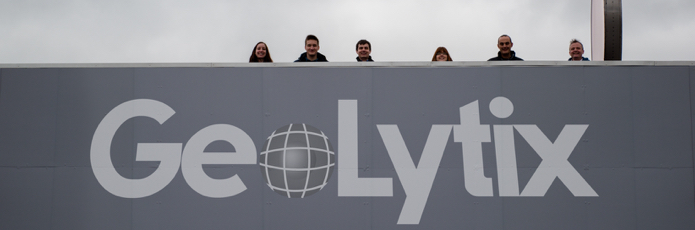
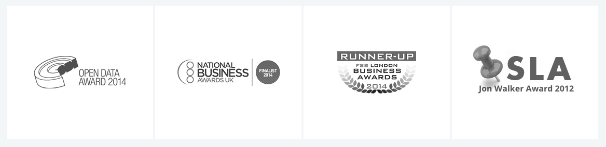

Guest post: Data is only interesting when you do something with it

If you have a burning ambition to start an ‘open data business’ my first and last piece of advice would be "Don’t". Data, open or otherwise, isn’t very interesting, important or valuable. Those of us who work with data often have an inflated view of its, and our own, importance.
Having said this, I’ve written extensively about the transformative potential of ‘open data’. I make a living working with data, open and closed, every day. The company I set up three years ago, Geolytix, creates open datasets. We employ seven people and we’re hiring; ASDA, Boots, Camelot are customers. We are members of the ODI, Sarah Hitchcock (Partner) was on the first ODUG committee, and we have won four awards;

So what gives?
Data only becomes interesting, important and valuable when you do things to and with it. I never think of GeoLytix as an ‘open data’ business. We are a business that makes use of open data – and closed data, and software, and algorithms, and processes, and people, and so on and so forth.
So why do we publish our own open datasets, including postal boundaries, census data packs and UK supermarkets? They are all datasets I know we could – and others do – make money out of by licensing as closed data.
In 2011 we were in a pub at GeoLytix’s first Christmas do. All two of us, plus partners. Ben, Sarah’s husband, was listening to me explain why we would publish open data.
"Soooo... you spend three months creating something of value, then give it away for nothing, to everyone, including competitors. You let them do anything they want – including selling it? You must be nuts!"
It would be nuts, if our business was simply data. But it’s not.
Data as the start point, not the end point
The exam questions GeoLytix get asked aren’t generally about which data to license, they are more complex questions: "How many restaurants can this brand open?", “Which properties should we show home buyers searching for ‘Islington’?”, “How much money will this new supermarket take?”, “Which stores should get Click and Collect modules?”, “If we close this branch what will pensioners do?”
To answer these questions we need data, lots of it, but also a lot more.
The data alone takes us precisely nowhere. I view open data’s primary transformative effect as the removal of a barrier. In the bad old good old days, assembling the data you needed to tackle our exam questions was a six- or seven-figure undertaking. A 1991 Census data and boundary pack was about £200,000 (a year)! Now a couple of downloads;
Adding value on top of open data
Open data is brilliant for us, it has shifted the point in the supply chain where the bulk of the value lies. We primarily compete and charge for the creative thinking bit. It makes customers pick partners, not on the amount of access to expensive restricted data they have, but on the depth and brilliance of their use of that data; exactly the area where we aim to win.
GeoLytix publishes some open datasets. But we don’t make all of the data we create open, the stuff that helps big-time with some of our analyses, you’re going to have to pay to use that. But we are more than happy to make open some of the foundational bits that might otherwise stop or hinder analytical projects.
Why publish open data?
This helps in a number of ways.
- First, and perhaps most importantly, it is the right thing to do. GeoLytix benefits enormously from government-published open data, it feels correct that we, in turn, give some of our data back.
- Second, it helps grow our corporate profile and reputation. Sixty projects and three years in, and every single piece of business has come from someone ringing us, not us contacting them.
- Third, it differentiates us: there aren’t many businesses genuinely giving stuff away with no strings attached.
- Fourth, it is the ultimate try-before-you-buy, we make our open datasets as accurate, well-documented, and user-friendly as we can.
There are potential downsides; we know competitors use our open data to improve their data, we know some simply take our open data and sell it as closed data, competitors can download it and find the odd error. But these downsides aren’t really negatives at all. They don’t touch the selling proposition around answering our exam questions. Neither do they touch any of the other positives listed above, in fact they emphasise them.
A small business publishing valuable open data isn’t nuts. We know this because we look at our active projects whiteboard every Monday morning, wince, and get ready for another hectic, creative, productive week.
Blair Freeman is Partner and Principal at GeoLytix. Follow @GeoLytix on Twitter
Image source: Geolytix